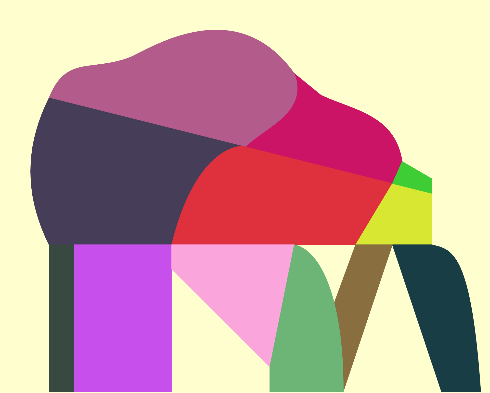
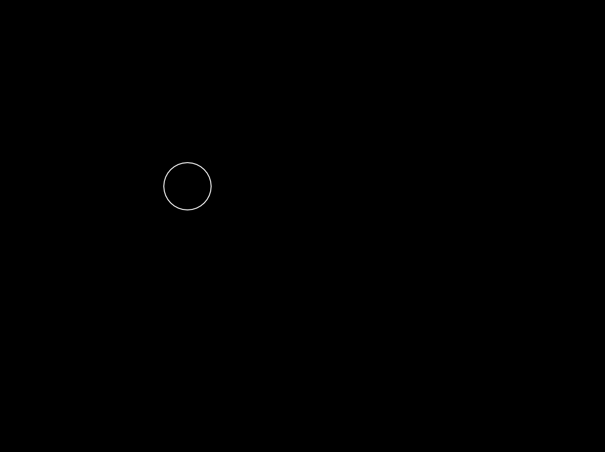
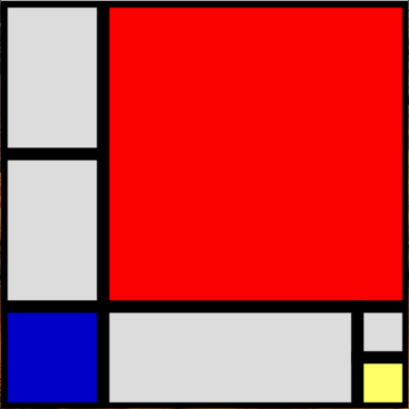
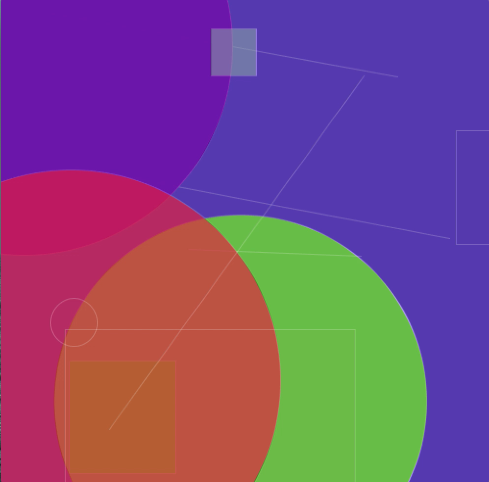
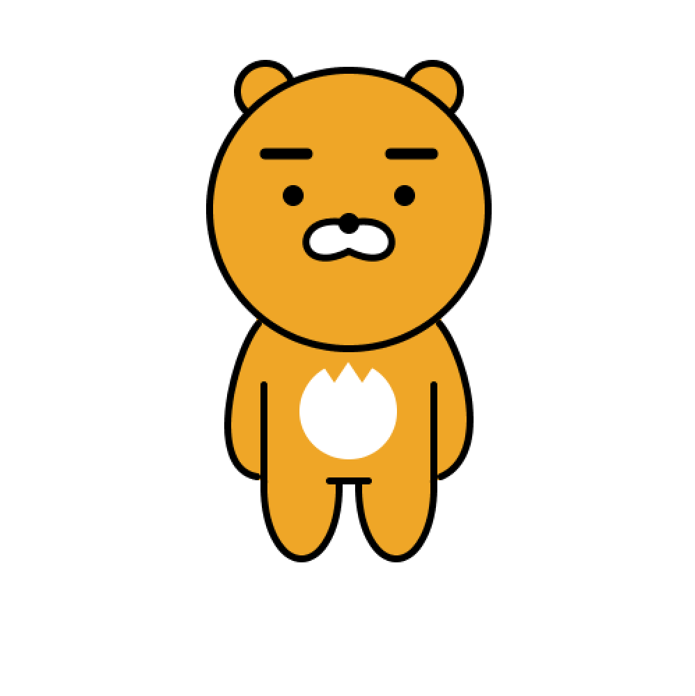
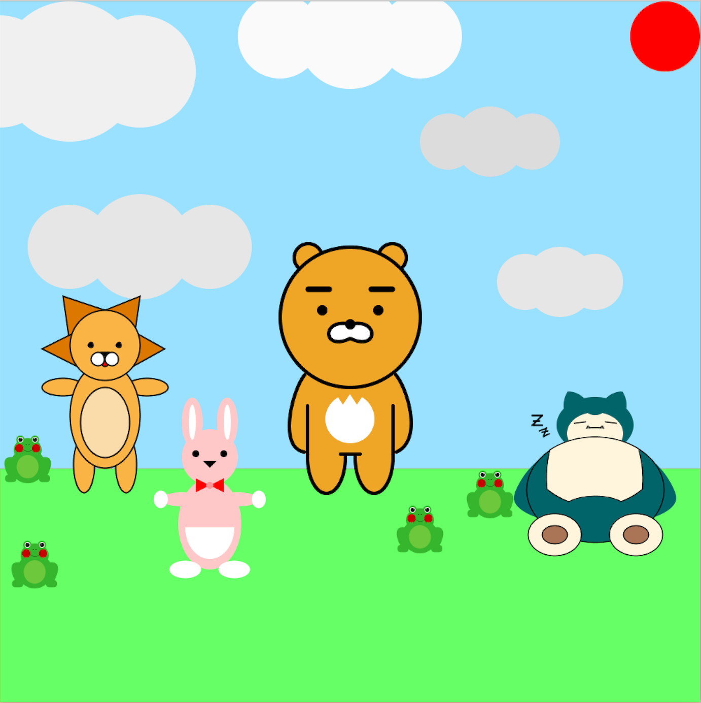
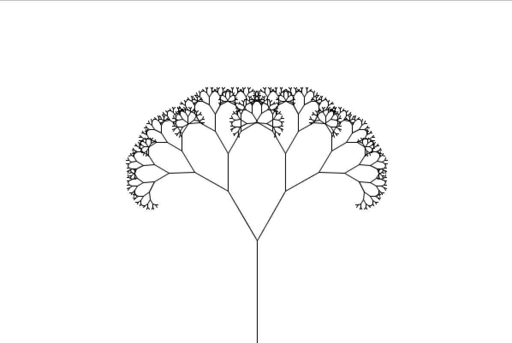

Media Art Gallery
안녕하세요. 갤러리 관리자 홍상원입니다.
Media Art Gallery는 숭실대학교 글로벌미디어학부 전공기초 정보와 예술 개론에서 프로세싱으로 제작한 작품들을 전시한 갤러리입니다.
Media Art Gallery에서는 미디어 아트 작품들을 카드 형태로 배치하였으며 카드를 클릭하면 작품에 대한 자세한 소개 페이지로 이동하게 됩니다.

Project 2 : Palette
김환기 화백의 론도를 참고하여 파레트로 재구성하여 제작한 작품입니다.

Project 3 : Circles Or Not
칸단스키(Kandinsky)의 몇 개의 원(Several Circles)을 참고하여 제작한 작품입니다.

Exercise 1 : Mouse Circle
마우스 커서가 중심인 원이 마우스를 따라다니도록 스케치한 예제입니다.

Exercise 2 : Composition II in Red, Blue, and Yellow
몬드리안(Mondrian)의 작품을 스케치한 예제입니다.

Exercise 3 : Free Style
원과 삼각형의 크기, 색상을 매번 랜덤하여 스케치하는 예제입니다.

Exercise 4 : Ryan
카카오 프렌즈(Kakao Friends)의 캐릭터 중 하나인 라이언(Ryan)을 스케치한 예제입니다.

Exercise 5 : Ryan & Friends
미리 구현해놓은 여러 함수들을 이용하여 라이언과 친구들을 스케치한 예제입니다.

Exercise 6 : Symmetrical Tree
재귀 호출을 이용하여 좌우가 대칭하는 나무를 스케치한 예제입니다.